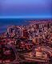
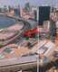
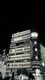
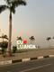

Luanda, onde a história encontra o mar.
Fotografias







Vídeo sobre Luanda
Poesia
Luanda, cidade junto ao mar,
onde o sol começa a brilhar,
entre ruas, sonhos e calor,
terra de vida, força e amor.
Luanda nunca para.
Uma cidade de energia, cultura e movimento.
A beleza de Luanda
Entre o oceano, a cidade e as suas histórias.